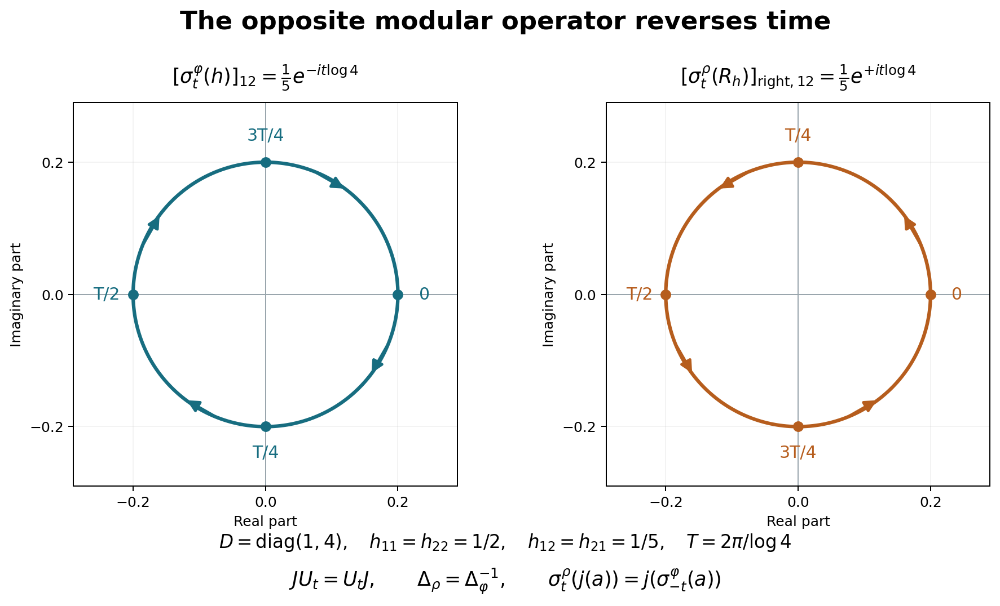

Original consequence proof by GPT-6 Astra (OpenAI), Ultra. Self-checked by the writing AI. Its faithful n.s.f. application uses only earlier general MF Sections1–6 plus WR/WF/ST; the later NO proof supplies the separate construction for every normal input, without general modular conjugation or KMS conclusions.
Modular covariance and the canonical opposite weight
Fresh consequence proof, GPT-6 Astra (OpenAI), Ultra, 2026-10-04. CC0-1.0 to the extent of rights held.
The precise modular premise is the actual MF-06 proof, Sections 1–6, especially equations 28–30 and the whole bounded-vector argument in Section 6. Its earlier inputs are rebound as follows: CI for closed involutions and exact polar domains; HA-R for multipliers, polar cutoffs and complete dual algebras; BD for bounded density; WH-04 Sections 2–4 for fullification and mixed products; SF, SB-0–6 for spectral operations; and the completely reconstructed MF scalar bridge, with its scalar interchange input supplied by fresh CF/SC/FF, for the kernel and continuous-integrable Fourier uniqueness. The old labels printed in the MF source table do not import the old provider bodies.
The new weight inputs are WF-1–6, EW, WR-1–7, and ST-2, with its concrete predual bound to CP01–06. MF-06's old arbitrary-weight application in Section 7 is not used as a premise. The free human context for weight covariance is Combes, Theorem 2.11, printed pp.53–55. Every consequence below is deduced from the displayed local proofs.
Actual earlier proof ranges: OA-FLOW.MF06.1, OA-FLOW.MF06.2, OA-FLOW.MF06.3, OA-FLOW.MF06.4, OA-FLOW.MF06.5, OA-FLOW.MF06.6, OA-FLOW.MF06.7, OA-FLOW.MF06.8, OA-FLOW.WF.1, OA-FLOW.WF.2, OA-FLOW.WF.3, OA-FLOW.WF.4, OA-FLOW.WF.5, OA-FLOW.WF.6, OA-FLOW.EW.1, OA-FLOW.EW.2, OA-FLOW.EW.3, OA-FLOW.EW.4, OA-FLOW.EW.5, OA-FLOW.WR.1, OA-FLOW.WR.2, OA-FLOW.WR.3, OA-FLOW.WR.4, OA-FLOW.WR.5, OA-FLOW.WR.6, OA-FLOW.WR.7, OA-FLOW.ST.2, OA-FLOW.CP.1, OA-FLOW.CP.2, OA-FLOW.CP.3, OA-FLOW.CP.4, OA-FLOW.CP.5, OA-FLOW.CP.6, OA-FLOW.CI.1, OA-FLOW.CI.2, OA-FLOW.CI.3, OA-FLOW.HA-R.1, OA-FLOW.HA-R.2, OA-FLOW.HA-R.3, OA-FLOW.HA-R.4, OA-FLOW.HA-R.5, OA-FLOW.HA-R.6, OA-FLOW.HA-R.7, OA-FLOW.WH04.2, OA-FLOW.WH04.3, OA-FLOW.WH04.4, OA-FLOW.SF.SF0, OA-FLOW.SF.SB0, OA-FLOW.SF.SB1, OA-FLOW.SF.SB2, OA-FLOW.SF.SB3, OA-FLOW.SF.SB4, OA-FLOW.SF.SB5, OA-FLOW.SF.SB6, OA-FLOW.MF-SB.1, OA-FLOW.MF-SB.2, OA-FLOW.MF-SB.3, OA-FLOW.MF-SB.4, OA-FLOW.MF-SB.5.
MW-1. Modular conjugation on every bounded vector
Start with a full left Hilbert algebra \(\mathcal A\subset H\), its full right algebra \(\mathcal D\), and \(P=\lambda(\mathcal A)''\), \(P'=R(\mathcal D)''\). Let \(S=J\Delta^{1/2}\), \(F=J\Delta^{-1/2}\), and \(U_t=\Delta^{it}\). The actual MF proof gives \[ J\mathcal A=\mathcal D,\quad J\mathcal D=\mathcal A,\quad JPJ=P', \qquad R_{Ja}=J\lambda_aJ\ (a\in\mathcal A),\quad \lambda_{Jd}=JR_dJ\ (d\in\mathcal D). \tag{MW1} \] Its Section 6 also gives \(U_tB_l=B_l\), \(U_tB_r=B_r\), with the corresponding conjugation of all bounded multipliers. We now extend the \(J\) identities in (MW1) to the entire bounded-vector spaces, rather than infer that extension from the involution-domain part.
If \(\xi\in B_l\) and \(a\in\mathcal A\), the mixed-product identity gives \[ \lambda_aJ\xi =JR_{Ja}\xi =J\lambda_\xi(Ja) =(J\lambda_\xi J)a. \tag{MW2} \] The right side has norm at most \(\|\lambda_\xi\|\|a\|\). Hence \(J\xi\in B_r\), and its bounded multiplier is \(R_{J\xi}=J\lambda_\xi J\). Conversely, for \(\eta\in B_r,d\in\mathcal D\), \[ R_dJ\eta =J\lambda_{Jd}\eta =JR_\eta(Jd) =(JR_\eta J)d. \tag{MW3} \] Thus \(J\eta\in B_l\) and \(\lambda_{J\eta}=JR_\eta J\). Since \(J^2=I\), these prove \[ JB_l=B_r,\qquad JB_r=B_l \tag{MW4} \] with the exact multiplier identities on those whole spaces. No unbounded product or extra involution-domain assumption occurs in (MW2)–(MW4).
MW-2. Equality of the two canonical weights through \(J\)
Let \(\Phi\) be WF's canonical weight on \(P\), and \(\rho\) the canonical weight on \(P'\) from the right algebra, as in WR-6. Write \(I_l,I_r\) for their full finite ideals and \(\theta_l,\theta_r\) for their vector maps. The map \[ j:P\longrightarrow P',\qquad j(a)=JaJ \] is a conjugate-linear multiplicative *-isomorphism with inverse of the same form; on positive elements it preserves order. It is not being described as a complex-linear homomorphism. The complex-linear *-anti-isomorphism is \(a\mapsto Ja^*J\), whose restriction to positive elements is the same.
Equations (MW2)–(MW4) give \[ j(I_l)=I_r,\qquad \theta_r(j(a))=J\theta_l(a)\quad(a\in I_l). \tag{MW5} \] For \(a\in P_+\), positivity and uniqueness of positive square roots give \(j(a)^{1/2}=j(a^{1/2})\). Therefore \[ \begin{split} \Phi(a)<\infty &\ \Longleftrightarrow\ a^{1/2}\in I_l\\ &\ \Longleftrightarrow\ j(a)^{1/2}\in I_r \ \Longleftrightarrow\ \rho(j(a))<\infty. \end{split} \] In that case WF and (MW5) imply \[ \rho(j(a))=\|\theta_r(j(a^{1/2}))\|^2 =\|J\theta_l(a^{1/2})\|^2=\Phi(a). \tag{MW6} \] Otherwise both values are infinite. Hence \(\rho(b)=\Phi(JbJ)\) for every \(b\in(P')_+\), with no finiteness restriction.
MW-3. Covariance of the weights and their full finite ideals
MF's whole-vector covariance gives \[ U_t I_l U_{-t}=I_l,\quad \theta_l(U_taU_{-t})=U_t\theta_l(a)\quad(a\in I_l). \tag{MW7} \] Let \(\beta_t(a)=U_taU_{-t}\) on \(P\). MF gives normalization of \(P\), and unitary conjugation is an ultraweakly continuous *-automorphism: its pullback on each concrete vector series replaces both vector sequences by \(U_{-t}\) applied to them. The group law follows from that of \(U_t\).
For \(a\geq0\) of finite \(\Phi\)-value, apply (MW7) to \(a^{1/2}\). Automorphisms preserve its positive square root, and unitarity gives \[ \Phi(\beta_t(a)) =\|U_t\theta_l(a^{1/2})\|^2 =\Phi(a). \tag{MW8} \] Using \(-t\) shows that finiteness holds in both directions; thus (MW8) also holds when \(\Phi(a)=\infty\). This proves invariance on the whole positive cone. It also proves the exact finite-ideal transport and GNS vector identity (MW7).
For the right algebra viewed as a left algebra with opposite product, the closed involution is \(F=S^*=J\Delta^{-1/2}\). CI's uniqueness of polar data identifies its modular operator as \(\Delta^{-1}\), with the same \(J\) and the full spectral domains. Its modular group on \(P'\) is therefore \[ \gamma_t(b)=U_{-t}bU_t. \tag{MW9} \] The right version of (MW7) with parameter \(-t\) proves \(\rho\circ\gamma_t=\rho\), including infinite values and full finite ideals. Since CI proves \(JU_t=U_tJ\), with the sign dictated by anti-linearity, (MW9) also gives \[ \gamma_t(j(a))=j(\beta_{-t}(a)). \tag{MW10} \] The minus sign comes from the reciprocal modular operator of the opposite algebra.
MW-4. The arbitrary faithful normal semifinite weight
Now let \(\varphi\) be any faithful normal semifinite weight on a concrete von Neumann algebra \(M\). WR supplies its faithful normal GNS representation \(\pi:M\to P\), the full finite-star algebra and the exact identity \(\Phi\circ\pi=\varphi\). ST-2 gives the ultraweakly continuous inverse of \(\pi\). Thus \[ \sigma_t^\varphi(x)=\pi^{-1}(U_t\pi(x)U_{-t}) \tag{MW11} \] is a normal *-automorphism group, and (MW7)–(MW8) become \[ \sigma_t^\varphi(N)=N,\qquad \Lambda(\sigma_t^\varphi(x))=U_t\Lambda(x)\ (x\in N),\qquad \varphi\circ\sigma_t^\varphi=\varphi\text{ on }M_+. \tag{MW12} \] It is pointwise \(\sigma\)-strong* continuous. Indeed strong continuity of \(U_t\) gives strong* continuity of \(U_t aU_{-t}\) for every fixed bounded \(a\). Its norm is constantly \(\|a\|\); ST-2's explicit finite-sum and square-summable-tail estimate turns this into intrinsic \(\sigma\)-strong* continuity and transports it back through \(\pi^{-1}\). This argument concerns all real \(t\), arbitrary nets of parameters and every fixed \(x\in M\), not merely a dense algebra.
The canonical opposite weight on \(P'\) now has the precise formula \[ \rho(b)=\varphi\!\left(\pi^{-1}(JbJ)\right)\quad(b\in(P')_+), \qquad \mathfrak n_\rho=J\pi(N)J. \tag{MW13} \] The conjugate-linear rule \[ \mathcal J\Lambda(x)=\Lambda_\rho(J\pi(x)J)\quad(x\in N) \] is isometric by (MW13), and its range is dense because the whole finite ideal on the right is \(J\pi(N)J\). It extends to an antiunitary \(H_\varphi\to H_\rho\). If \(U_\rho:H_\rho\to H_\varphi\) is WF's right GNS unitary, then (MW5) gives \(U_\rho\mathcal J=J\), on the whole Hilbert space.
Finally, for \(f\in M_*^+\) dominated by a finite multiple of \(\varphi\), use WR's \(t_f\in P'_+\) and canonical vector \(\alpha_f\). Put \[ h_f=\pi^{-1}(Jt_fJ)\in M_+. \] Then (MW13) and WR15 give \(\varphi(h_f)=\rho(t_f)=\|f\|\). The square-root multiplier identity (MW3) gives \[ J\alpha_f=\Lambda(h_f^{1/2}),\qquad f(a)=\langle\pi(a)J\Lambda(h_f^{1/2}),J\Lambda(h_f^{1/2})\rangle. \tag{MW14} \] In particular \(f\leq\varphi\) if and only if \(h_f\leq1\), by WR16 and order preservation of \(j,\pi\). This is the stated implementing-vector formula; no product formula such as \(\varphi(h_fa)\) is inferred for noncommuting \(h_f,a\).
Boundary
These deductions prove the canonical opposite-weight formula through \(J\), both complete finite-ideal transports, the GNS antiunitary, modular covariance including infinite values, the opposite time-reversal sign, and the canonical implementing vectors, at the exact MF/WR/WF inputs. They do not prove KMS characterization or uniqueness, natural-cone standard-form axioms, arbitrary sum decompositions of normal weights, or general operator-valued weight statements. The proofs of the MF/WR/WF inputs are not given here.
MW-5. The opposite modular time direction

This exact matrix example illustrates MW-2–4, especially equations MW9–MW14. Its reproducible source is render_modular_opposite.py. The two circles are trajectories of one complex matrix coefficient; neither is a picture of the full positive cone.
Let \(M=M_2(\mathbb C)\), \(D=\operatorname{diag}(1,4)\), and \(\varphi(a)=\operatorname{Tr}(Da)\). Realize the GNS Hilbert space as Hilbert–Schmidt matrices, with \(\Lambda(x)=xD^{1/2}\) and \(\pi(a)=L_a\), left multiplication. A direct adjoint computation gives \[ S\xi=D^{-1/2}\xi^*D^{1/2},\quad F\xi=D^{1/2}\xi^*D^{-1/2},\quad \Delta\xi=D\xi D^{-1},\quad J\xi=\xi^*. \] All domains here are the entire finite-dimensional Hilbert space. The displayed positive \(\Delta\) and antiunitary \(J\) satisfy \(S=J\Delta^{1/2}\), so uniqueness in CI identifies the polar data. Hence \[ U_t\xi=D^{it}\xi D^{-it},\qquad \sigma_t^\varphi(a)=D^{it}aD^{-it},\qquad j(L_a)=JL_aJ=R_{a^*}. \] Right multiplication means \(R_b\xi=\xi b\). Its products satisfy \(R_bR_c=R_{cb}\); the label “right coefficient” in the second panel refers to the matrix \(b\), not to entries of the superoperator \(R_b\). MW-2 and MW-3 give \[ \rho(R_b)=\operatorname{Tr}(Db)\quad(b\geq0),\qquad \sigma_t^\rho(R_b)=R_{D^{-it}bD^{it}}. \] These formulas can also be checked by multiplying \(U_{-t}R_bU_t\) on a Hilbert–Schmidt matrix.
Choose \[ h=\begin{pmatrix}1/2&1/5\\1/5&1/2\end{pmatrix}. \] Its eigenvalues are \(7/10\) and \(3/10\), so \(h>0\). In the first panel the off-diagonal coefficient is \(e^{-it\log4}/5\); in the second it is \(e^{+it\log4}/5\). Both have radius \(1/5\), and their common period is \(T=2\pi/\log4\). Labels mark the exact times \(0,T/4,T/2,3T/4\); arrows show increasing time. Throughout these orbits, \[ \varphi(\sigma_t^\varphi(h)) =\rho(\sigma_t^\rho(R_h)) =\frac52, \] because the two diagonal entries remain \(1/2\). The direction reversal is precisely \(\Delta_\rho=\Delta_\varphi^{-1}\), while \(JU_t=U_tJ\) still holds. With \(j(L_h)=R_h\), the equation \(\sigma_t^\rho(j(a))=j(\sigma_{-t}^\varphi(a))\) is verified entry by entry.
The preceding polar-vector example has this same \(h=C\): its functional density is \(B=D^{1/2}hD^{1/2}\), and its canonical implementing vector is \(J\Lambda(h^{1/2})=D^{1/2}h^{1/2}\), exactly MW14. Thus the two illustrations use consistent normalizations.
The full arbitrary-weight and infinite-value proof remains in MW and its exact earlier inputs. For human context see Combes, Theorem 2.11, printed pp.53–55. This figure, source and example proof are CC0-1.0 to the extent of rights held.